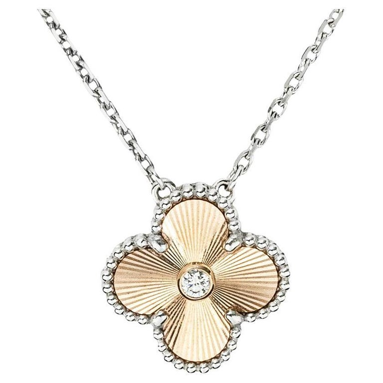
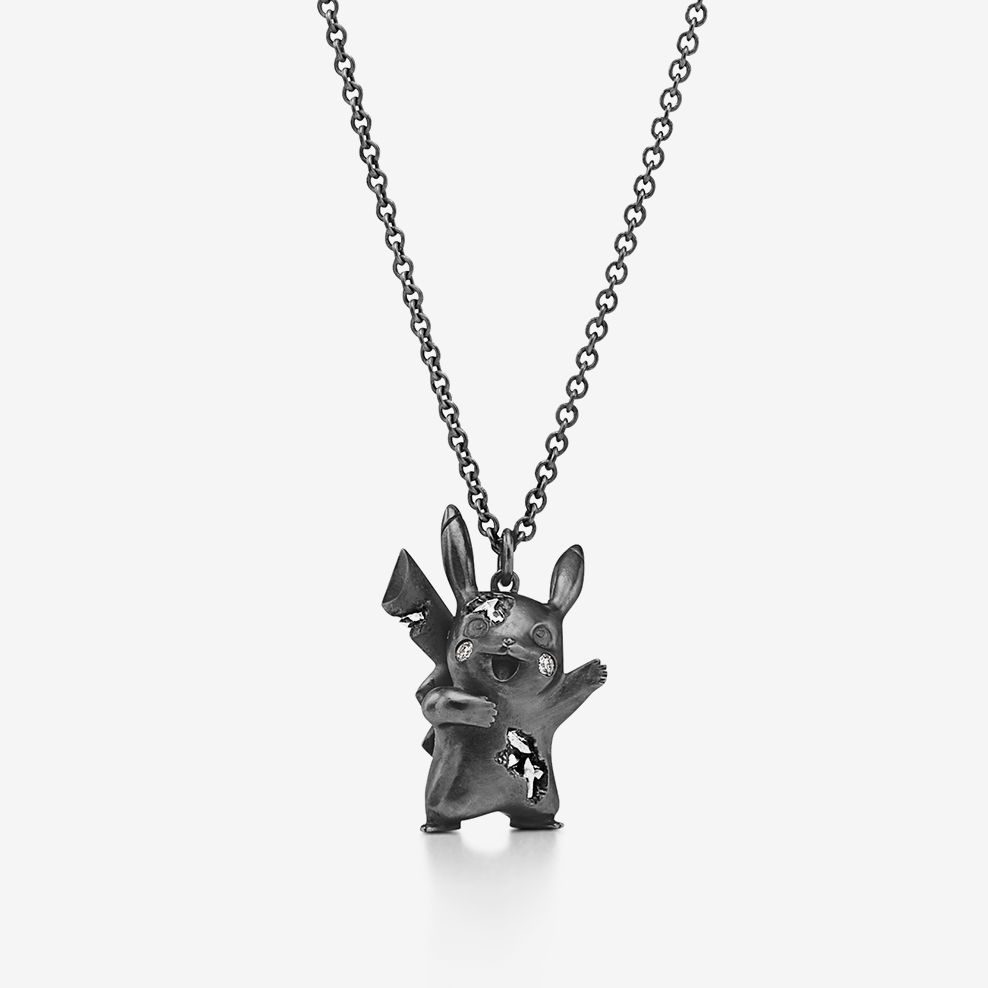

2026 / Most wanted
2026 / Most wantedBvlgari
Serpenti Viper Necklace — Yellow Gold
Broad polished scales give this Serpenti Viper necklace a strong, continuous outline.
US$15,000Explore ↗
Official US listed reference · snapshot reviewed 20 Oct 20262022—2026 / THE MUSELUX ARCHIVE
Five years of pendants, chains and changing proportions.
Explore four popular necklaces and two limited or special editions from each year.
Each year's four popular picks form an editorial shortlist based on dated demand reports and editorial coverage. Source ranks refer to their stated quarter or period; the edit is not a universal annual sales ranking. A current photograph may show a later colour or material variant of a design family that was popular in the selected year; the pictured reference is identified on its detail page.
Edition labels distinguish numbered editions, explicit limited releases and seasonal capsules. A capsule label does not imply a fixed production quantity. Prices remain in USD, with current retail references, dated reported prices and any unavailable prices clearly identified. The 2026 edit covers evidence available by 19 October 2026.
2026 / FORM & CULTURE
Graphic chains, nature motifs and enveloping gold shapes define this year-to-date necklace edit. Four fine-jewelry choices meet two playful collaboration pieces, following dated 2026 editorial attention through 19 October.
2026 / Most wantedBroad polished scales give this Serpenti Viper necklace a strong, continuous outline.
 2026 / Most wanted
2026 / Most wantedThe Force 10 Rise pendant compresses a cable-and-buckle idea into a small, clear shape at the neckline.
 2026 / Most wanted
2026 / Most wantedTwo linked gold forms give this pendant a clear, compact center of gravity.
 2026 / Most wanted
2026 / Most wantedAlternating polished links make the HardWear necklace read as a continuous piece of sculpture around the neckline.
Numbered editions, limited releases and collaboration capsules are labelled individually.
 2026 / 2026 collaboration capsule
2026 / 2026 collaboration capsuleThis small dragonfly brings a playful outline to the neckline without needing a heavy chain.
 2026 / 2026 collaboration capsule
2026 / 2026 collaboration capsuleTwo fine strands extend below the central dragonfly, giving this necklace a different rhythm from a conventional pendant.
2025 / FORM & CULTURE
Our 2025 edit places the quiet curves of Tiffany T and Coco Crush beside Gucci’s silver heart and the jeweled fan of Divas’ Dream. Louis Vuitton × Murakami and Ariana Grande × Swarovski supply two distinct collaboration capsules, each labelled by its documented release year and independently dated price.
 2025 / Most wanted
2025 / Most wantedCoco Crush translates the visual softness of quilting into a small, sculptural pendant.
 2025 / Most wanted
2025 / Most wantedThe Smile pendant treats a small gesture as the whole composition.
 2025 / Most wanted
2025 / Most wantedGucci gives the familiar heart pendant a deliberately graphic face.
 2025 / Most wanted
2025 / Most wantedDivas’ Dream turns a fan into a small architectural flourish.
Numbered editions, limited releases and collaboration capsules are labelled individually.
 2025 / 2025 artist collaboration capsule
2025 / 2025 artist collaboration capsuleMurakami’s Superflat characters give this layered necklace a sequence of small visual surprises.
 2025 / 2025 celebrity collaboration capsule
2025 / 2025 celebrity collaboration capsuleA circle of hearts gives this necklace its distinct rhythm.
2024 / FORM & CULTURE
Alhambra, Tiffany T, B.zero1 and Coco Crush give our 2024 neckline edit four different signatures. A Poké Ball collaboration necklace and the annual two-tone Holiday Alhambra pendant add collectible detail. Dated market windows and collection coverage explain each choice, while photographs and USD references identify the exact variants separately.
 2024 / Most wanted
2024 / Most wantedThe Smile pendant treats a small gesture as the whole composition.
 2024 / Most wanted
2024 / Most wantedB.zero1 rewards a view from the side.
 2024 / Most wanted
2024 / Most wantedCoco Crush translates the visual softness of quilting into a small, sculptural pendant.
 2024 / Most wanted
2024 / Most wantedA small clover can give a whole neckline its point of focus.
Numbered editions, limited releases and collaboration capsules are labelled individually.
 2024 / 2024 collaboration capsule
2024 / 2024 collaboration capsuleA small Poké Ball changes the language of a gold-tone necklace.

2024 / 2024 seasonal holiday editionThe 2024 Holiday Alhambra pendant combines two different gold tones around one familiar clover.
2023 / FORM & CULTURE
A year of new launches and familiar emblems brings subtle geometry to the neckline. Archive collaborations add character-led forms alongside the fine-jewelry selections.
 2023 / Most wanted
2023 / Most wantedCoco Crush translates the visual softness of quilting into a small, sculptural pendant.
 2023 / Most wanted
2023 / Most wantedThe Smile pendant treats a small gesture as the whole composition.
 2023 / Most wanted
2023 / Most wantedBlack onyx makes the Alhambra outline unusually crisp.
 2023 / Most wanted
2023 / Most wantedThe Lock pendant places a bright diamond-set arch above a smooth rose-gold curve, using a single open shape to organise the whole design.
Numbered editions, limited releases and collaboration capsules are labelled individually.
 2023 / Collaboration capsule · ROSÉ2023
2023 / Collaboration capsule · ROSÉ2023A line of pink sapphires follows the upper arc of a rounded Lock pendant, adding colour exactly where the form begins to curve.

2023 / Collaboration capsule · Pokémon 2023Pikachu’s familiar ears and lifted arms remain immediately recognisable, but the darkened silver surface and interrupted edges give the figure an unexpected archaeological mood.
2022 / FORM & CULTURE
A compact edit of recognizable fine-jewelry families meets the bolder mood of two fashion collaborations. Each photographed reference is identified separately from its annual evidence.
 2022 / Most wanted
2022 / Most wantedA circle can be as expressive as a stone.
 2022 / Most wanted
2022 / Most wantedRepeating gauge links give this silver necklace a measured, almost industrial rhythm.
 2022 / Most wanted
2022 / Most wantedTwo interlocking loops bring the Cable idea into a small, balanced composition.
 2022 / Most wanted
2022 / Most wantedA softly luminous mother-of-pearl centre gives the four-lobed Alhambra motif a gentle presence against its beaded yellow-gold frame.
Numbered editions, limited releases and collaboration capsules are labelled individually.
 2022 / Seasonal collaboration · adidas x Gucci
2022 / Seasonal collaboration · adidas x GucciAn elongated chain rhythm gives this collaboration necklace a relaxed sporting attitude.
 2022 / Seasonal collaboration · Fendace
2022 / Seasonal collaboration · FendaceFendace combines a generous curb chain with a dense sequence of emblems and bright decorative stones.
USD references are labelled by their price date and basis. Archive prices are not live offers; confirm current availability with the brand or the named source.